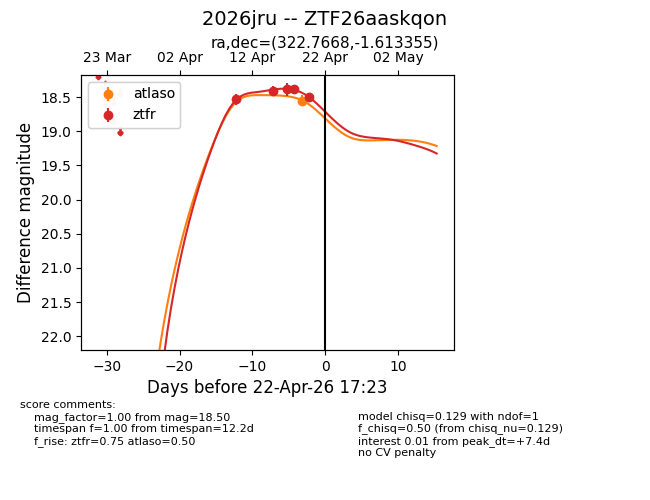
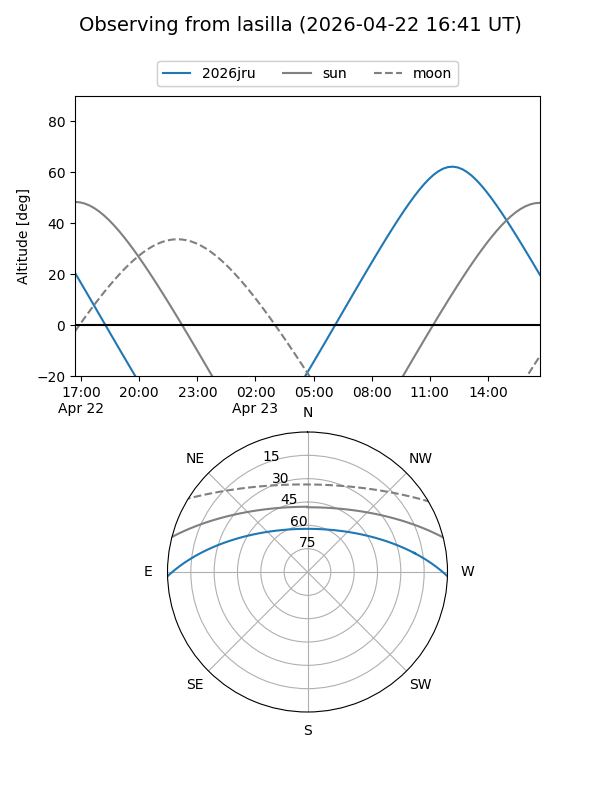
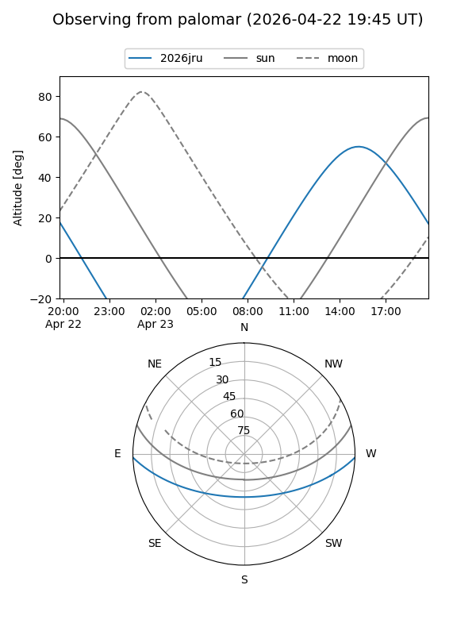
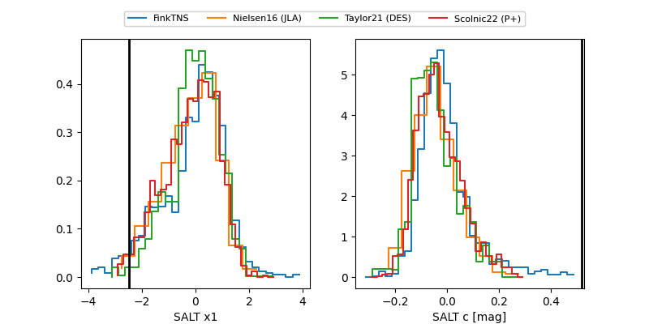

2026jru
Target 2026jru at 2026-04-22 17:26
Aliases and brokers:
FINK: link
Lasair: link
ALeRCE: link
TNS: link
YSE: link
alt names
ZTF26aaskqon (ztf,fink_ztf)
2026jru (tns,yse)
Coordinates:
equatorial (ra, dec) = 322.7668,-1.61335
equatorial (HMS+DMS) = 21:31:04.04,-01:36:48.08
galactic (l, b) = (52.1547,-35.70288)
Flags:
Photometry:
last atlaso=18.55, ztfr=18.50
1 atlaso, 5 ztfr detections
Lightcurve

Visibility


Additional plots
